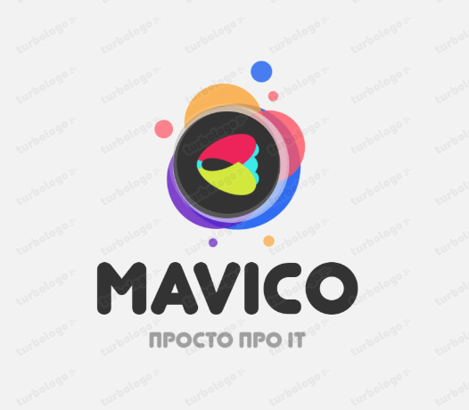

Story of the Company
Dias Isenov shared a notion he had as we were sitting at our favorite campus café, sipping coffee and taking in the lively scene. He begins by describing the obstacles he had when he initially began his journey into the world of programming and computer science. "I think there is a gap in the market," Dias Isenov reflects, with some excitement in his eyes. "We have a lot of knowledge and expertise right at our universities, but online teaching can be much better. There's a require for high-quality, commonsense, and available online learning assets for yearning IT experts. a progressive approach to computer science instruction. It was a urgent minute, one of those times after you realize you're on the brink of something enormous. "You're absolutely right," I answered, my eagerness growing. "We are able make a genuine distinction within the lives of understudies like us who are looking to memorize programming, web development, and computer science abilities."

From that minute on, we went from companions and colleagues to something more significant. We have ended up accomplices within the mission to rethink IT online learning. Our shared vision and faithful assurance were the driving constrain behind what would before long ended up our passion project and eventually our life's work. Our to begin with step was to think around what courses we wished were accessible when we begun our IT journey. We put ourselves within the shoes of fledglings and progressed learners, considering what they have to be succeed. Together, we have fastidiously recognized a arrangement of points, each with viable esteem. The list of courses kept on develop, and as we dug more profound into this wander, the energy of turning our vision into reality impelled us forward. We knew we had something interesting to offer the world of e-learning, and we couldn't hold up to share it with others.